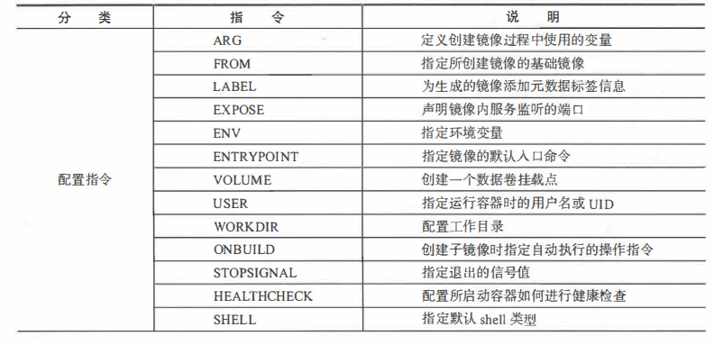
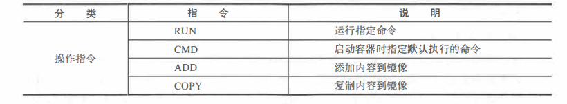

<!DOCTYPE html>
<html>
<head><meta name="generator" content="Hexo 3.9.0">
  <meta charset="utf-8">
  

  
  <title>docker入门实战（三）—— dockerfile 指令 | Hexo</title>
  <meta name="viewport" content="width=device-width, initial-scale=1, maximum-scale=1">
  <meta name="description" content="1.配置指令 ARG定义创建镜像过程中使用的变量ARG VERSION=9.3  FROM指定所创建的基础镜像FROM debian:${VERSION} LABEL为生成的镜像添加元数据标签信息LABEL version=”l.0.0-rc3”LABEL author=”yeasy@github” date=”2020-01-01”LABEL description=”This text ill">
<meta name="keywords" content="docker,dockerfile">
<meta property="og:type" content="article">
<meta property="og:title" content="docker入门实战（三）—— dockerfile 指令">
<meta property="og:url" content="http://yoursite.com/2019/09/13/docker/docker入门实战（三）——dockerfile指令/index.html">
<meta property="og:site_name" content="Hexo">
<meta property="og:description" content="1.配置指令 ARG定义创建镜像过程中使用的变量ARG VERSION=9.3  FROM指定所创建的基础镜像FROM debian:${VERSION} LABEL为生成的镜像添加元数据标签信息LABEL version=”l.0.0-rc3”LABEL author=”yeasy@github” date=”2020-01-01”LABEL description=”This text ill">
<meta property="og:locale" content="en">
<meta property="og:image" content="http://yoursite.com/2019/09/13/docker/docker入门实战（三）——dockerfile指令/cmd.png">
<meta property="og:image" content="http://yoursite.com/2019/09/13/docker/docker入门实战（三）——dockerfile指令/cmd1.png">
<meta property="og:updated_time" content="2019-02-22T08:37:38.000Z">
<meta name="twitter:card" content="summary">
<meta name="twitter:title" content="docker入门实战（三）—— dockerfile 指令">
<meta name="twitter:description" content="1.配置指令 ARG定义创建镜像过程中使用的变量ARG VERSION=9.3  FROM指定所创建的基础镜像FROM debian:${VERSION} LABEL为生成的镜像添加元数据标签信息LABEL version=”l.0.0-rc3”LABEL author=”yeasy@github” date=”2020-01-01”LABEL description=”This text ill">
<meta name="twitter:image" content="http://yoursite.com/2019/09/13/docker/docker入门实战（三）——dockerfile指令/cmd.png">
  
    <link rel="alternate" href="/atom.xml" title="Hexo" type="application/atom+xml">
  
  
    <link rel="icon" href="/favicon.png">
  
  
    <link href="//fonts.googleapis.com/css?family=Source+Code+Pro" rel="stylesheet" type="text/css">
  
  <link rel="stylesheet" href="/css/style.css">
</head>
</html>
<body>
  <div id="container">
    <div id="wrap">
      <header id="header">
  <div id="banner"></div>
  <div id="header-outer" class="outer">
    <div id="header-title" class="inner">
      <h1 id="logo-wrap">
        <a href="/" id="logo">Hexo</a>
      </h1>
      
    </div>
    <div id="header-inner" class="inner">
      <nav id="main-nav">
        <a id="main-nav-toggle" class="nav-icon"></a>
        
          <a class="main-nav-link" href="/">Home</a>
        
          <a class="main-nav-link" href="/archives">Archives</a>
        
      </nav>
      <nav id="sub-nav">
        
          <a id="nav-rss-link" class="nav-icon" href="/atom.xml" title="RSS Feed"></a>
        
        <a id="nav-search-btn" class="nav-icon" title="Search"></a>
      </nav>
      <div id="search-form-wrap">
        <form action="//google.com/search" method="get" accept-charset="UTF-8" class="search-form"><input type="search" name="q" class="search-form-input" placeholder="Search"><button type="submit" class="search-form-submit">&#xF002;</button><input type="hidden" name="sitesearch" value="http://yoursite.com"></form>
      </div>
    </div>
  </div>
</header>
      <div class="outer">
        <section id="main"><article id="post-docker/docker入门实战（三）——dockerfile指令" class="article article-type-post" itemscope itemprop="blogPost">
  <div class="article-meta">
    <a href="/2019/09/13/docker/docker入门实战（三）——dockerfile指令/" class="article-date">
  <time datetime="2019-09-13T04:49:42.000Z" itemprop="datePublished">2019-09-13</time>
</a>
    
  <div class="article-category">
    <a class="article-category-link" href="/categories/docker/">docker</a>
  </div>

  </div>
  <div class="article-inner">
    
    
      <header class="article-header">
        
  
    <h1 class="article-title" itemprop="name">
      docker入门实战（三）—— dockerfile 指令
    </h1>
  

      </header>
    
    <div class="article-entry" itemprop="articleBody">
      
        <h1 id="1-配置指令"><a href="#1-配置指令" class="headerlink" title="1.配置指令"></a>1.配置指令</h1><ol>
<li>ARG<br>定义创建镜像过程中使用的变量<br>ARG VERSION=9.3 </li>
<li>FROM<br>指定所创建的基础镜像<br>FROM debian:${VERSION}</li>
<li>LABEL<br>为生成的镜像添加元数据标签信息<br>LABEL version=”l.0.0-rc3”<br>LABEL author=”yeasy@github” date=”2020-01-01”<br>LABEL description=”This text illustrates<br>that label-values can span mul七iple lines.” <a id="more"></a>

</li>
</ol>
<p><br></p>
<ol start="4">
<li>EXPOSE<br>声明镜像内服务监听的端口<br>EXPOSE <part> [&lt;part/<protocol>… ]<br>EXPOSE 22 80 8443<br>注意该指令只是起到声明作用， 并不会自动完成端口映射<br>如果要映射端口，在启动容器时可以使用-p参数（docker主机会自动分配一个宿主机的临时端口）或 -p HOST_PORT:CONTAINER_PORT参数</protocol></part></li>
<li>ENV<br>指定环境变量， 在镜像生成过程中会被后续RUN指令使用， 在镜像启动的容器中也会存在<br>ENV APP VERS工ON=l.0.0<br>ENV APP_HOME=/usr/local/app<br>ENV PATH $PATH:/usr/local/bin<br>指令指定的环境变量在运行时可以被覆盖掉， 如 docker run –env <key>=<value> built_image</value></key></li>
<li>ENTRYPOINT<br>镜像的默认入口命令，该入口命令会在启动容器时作为根命令执行，<strong>所有传入值作为该命令的参数</strong>。</li>
</ol>
<p>支持两种格式：</p>
<blockquote>
<ul>
<li>ENTRYPOINT[“executable”,”param1”,”param2”];exec调用执行</li>
<li>ENTRYPOINT command param1 param2;shell中执行<br>每个 Dockerfile 中只能有一个 ENTRYPOINT, 当指定多个时， 只有最后一个起效。<br>在运行时， 可以被 –entrypoint 参数覆盖掉， 如 docker run –entrypoint</li>
</ul>
</blockquote>
<p>如果run命令后面有东西，那么后面的全部都会作为entrypoint的参数。如果run后面没有额外的东西，但是cmd有，那么cmd的全部内容会作为entrypoint的参数</p>
<ol start="7">
<li>VOLUME<br>创建一个数据卷挂载点。<br>格式为 VOLUME [“/data”]。<br>运行容器时可以从本地主机或其他容器挂载数据卷， 一般用来存放数据库和需要保持的数据等。</li>
<li>WORKDIR<br>为后续的 RUN CMD ENTRYPO INT 指令配置工作目录。<br>格式为 WORKDIR path /to/workdir</li>
<li>ONBUILD<br>指定当基于所生成镜像创建子镜像时，自动执行的操作指<br>格式为 ONBUILD [INSTRUCTION]<br>例如，使用如下的 Dockerfile创建父镜像ParentImag指定 ONBUILD<figure class="highlight plain"><table><tr><td class="gutter"><pre><span class="line">1</span><br><span class="line">2</span><br><span class="line">3</span><br><span class="line">4</span><br><span class="line">5</span><br></pre></td><td class="code"><pre><span class="line"># Dockerfile for Parentimage </span><br><span class="line">...</span><br><span class="line">ONBUILD ADD . / app/src </span><br><span class="line">ONBUILD RUN /usr / local/bin/python build --dir / app/src </span><br><span class="line">...</span><br></pre></td></tr></table></figure>

</li>
</ol>
<p>使用 docker build 命令创建子镜像ChildImage时（FROM Parentimage ），会首先执行 Parentmage配置的ONBUILD指令：</p>
<h1 id="Dockerfile-for-Childimage"><a href="#Dockerfile-for-Childimage" class="headerlink" title="Dockerfile for Childimage"></a>Dockerfile for Childimage</h1><p>FROM Parenti mage<br>等价于在ChildImage的Dockerfile的添加了如下指令：</p>
<figure class="highlight plain"><table><tr><td class="gutter"><pre><span class="line">1</span><br><span class="line">2</span><br></pre></td><td class="code"><pre><span class="line">ADD . / app/src </span><br><span class="line">RUN /usr / local/bin/python build --dir / app/src</span><br></pre></td></tr></table></figure>

<ol start="11">
<li>SHELL<br>指定其他命令使用shell时的默认shell类型：<br>SHELL [“executable”,”parameters”]<br>默认值为[“/bin/sh”,”-c”]</li>
</ol>
<h1 id="2-操作指令"><a href="#2-操作指令" class="headerlink" title="2.操作指令"></a>2.操作指令</h1><ol>
<li>RUN<br>制作镜像时运行指定命令<br>Run apt-get update <br> &amp;&amp; apt-get install -y libsnappy-dev zliblg-dev </li>
<li>CMD<br>指定启动容器时默认执行的命令<blockquote>
<p>CMD [“executable”,”param1”,”param2”] (exec form, this is the preferred form)<br>CMD [“param1”,”param2”] (as default parameters to ENTRYPOINT)<br>CMD command param1 param2 (shell form)</p>
</blockquote>
</li>
<li>ADD<br>添加内容到镜像<blockquote>
<p>ADD &lt; src &gt; &lt; dest &gt;<br>该命令将复制指定的src路径下内容到容器中的dest路径下<br>路径支持正则格式<br>ADD *.c /code/</p>
</blockquote>
</li>
<li>COPY<br>复制内容到镜像<blockquote>
<p>COPY &lt; src &gt; &lt; dest &gt;<br>路径支持正则格式<br>COPY和ADD指令功能类似，当使用本地目录为源目录时，推荐使用COPY</p>
</blockquote>
</li>
</ol>
<h1 id="3-创建镜像"><a href="#3-创建镜像" class="headerlink" title="3.创建镜像"></a>3.创建镜像</h1><p>该命令将读取指定路径下（包括子目录）的 Dockerfile ，并将该路径下所有数据作为上下文（ Context ）发送给 Docker 服务端 Docker 服务端在校验 Dockerfile 格式通过后，逐条执行其中定义的指令，碰到 ADD COPY RUN 指令会生成 层新的镜像最终如果创建镜像成功，会返回最终镜像的 ID<br>如果上下文过大， 会导致发送大量数据给服务端，延缓建过程 除非是生成镜像所必需的文件，不然不要放到上下文路径 如果使用非上下文路径下的 Dockerfile ，可以通过-f选项来指定其路径。<br>例如 上下文路径为.<br>docker build -t builder/first_image:1.0.0 .</p>
<h1 id="4-多步骤创建"><a href="#4-多步骤创建" class="headerlink" title="4.多步骤创建"></a>4.多步骤创建</h1><p>自17.05版本开始，docker支持多步骤镜像创建，可以精简最终生成的镜像大小</p>
<p>FROM golang : l.9 as builder # define stage name as bu lder<br>RUN mkdir -p /go/src/test<br>WORKDIR /go/src/test<br>COPY main.go<br>RUN CGO_ENABLED=O GOOS=linux go build -o app </p>
<p>FROM alpine :latest<br>RUN apk –no-cache add ca-certif cates<br>WORKDIR /root/<br>COPY from=builder /go/src/test/app . # copy file from the builder stage<br>CMD [“./app”] </p>
<p>总结</p>
<ol>
<li>精简镜像途：尽量让每个镜像的用途都比较集中单一，避免构造大而复杂、多功能的镜像；</li>
<li>选用合适的基础镜像：容器的核心是应用。选择过大的父镜像（如 ubuntu系统镜像）会造成最终生成应用镜像的膝肿，推荐选用瘦身过的应用镜像（如node:slim ），或者较为小巧的系统镜像（如 alpine ,busybox ,debian );</li>
<li>正确使用版本号</li>
<li>减少镜像层数</li>
<li>恰当使用多步骤创建：通过多步骤 ，可以将编译和运行等过程分开，保证最终生成的镜像只包括运行应用所需要的最小化环境 当然，用户也可以通过分别构造编译镜像和 运行镜像来达到类似的结果， 但这种方式需要维 多个Dockerfile</li>
<li>使用.dockerignore文件：使用它可标记在执行docker build 时忽略的路件，避免发送不必要的数据内容，从而加快整个镜像创建过程</li>
<li>及时删除临时文件和缓存文件：特别是在执行apt-get指令后，/var/cache/apt下面会缓存了一些安装包</li>
</ol>

      
    </div>
    <footer class="article-footer">
      <a data-url="http://yoursite.com/2019/09/13/docker/docker入门实战（三）——dockerfile指令/" data-id="ck0hncd5w000wfyxx8vx0icnz" class="article-share-link">Share</a>
      
      
  <ul class="article-tag-list"><li class="article-tag-list-item"><a class="article-tag-list-link" href="/tags/docker/">docker</a></li><li class="article-tag-list-item"><a class="article-tag-list-link" href="/tags/dockerfile/">dockerfile</a></li></ul>

    </footer>
  </div>
  
    
<nav id="article-nav">
  
    <a href="/2019/09/13/docker/docker-networking/" id="article-nav-newer" class="article-nav-link-wrap">
      <strong class="article-nav-caption">Newer</strong>
      <div class="article-nav-title">
        
          docker--网络配置
        
      </div>
    </a>
  
  
    <a href="/2019/09/13/docker/docker入门实战（四）—— 网络访问/" id="article-nav-older" class="article-nav-link-wrap">
      <strong class="article-nav-caption">Older</strong>
      <div class="article-nav-title">docker入门实战（四）—— 网络访问</div>
    </a>
  
</nav>

  
</article>

</section>
        
          <aside id="sidebar">
  
    
  <div class="widget-wrap">
    <h3 class="widget-title">Categories</h3>
    <div class="widget">
      <ul class="category-list"><li class="category-list-item"><a class="category-list-link" href="/categories/GPU/">GPU</a></li><li class="category-list-item"><a class="category-list-link" href="/categories/Go/">Go</a></li><li class="category-list-item"><a class="category-list-link" href="/categories/Spark/">Spark</a></li><li class="category-list-item"><a class="category-list-link" href="/categories/docker/">docker</a></li><li class="category-list-item"><a class="category-list-link" href="/categories/go/">go</a></li><li class="category-list-item"><a class="category-list-link" href="/categories/golang/">golang</a></li><li class="category-list-item"><a class="category-list-link" href="/categories/linux/">linux</a></li><li class="category-list-item"><a class="category-list-link" href="/categories/node/">node</a></li><li class="category-list-item"><a class="category-list-link" href="/categories/书中自有黄金屋/">书中自有黄金屋</a></li><li class="category-list-item"><a class="category-list-link" href="/categories/人生苦短我用python/">人生苦短我用python</a><ul class="category-list-child"><li class="category-list-item"><a class="category-list-link" href="/categories/人生苦短我用python/linux环境配置/">linux环境配置</a></li></ul></li><li class="category-list-item"><a class="category-list-link" href="/categories/其他/">其他</a></li><li class="category-list-item"><a class="category-list-link" href="/categories/分布式/">分布式</a><ul class="category-list-child"><li class="category-list-item"><a class="category-list-link" href="/categories/分布式/分布式共识算法/">分布式共识算法</a></li></ul></li><li class="category-list-item"><a class="category-list-link" href="/categories/分布式基本理论/">分布式基本理论</a></li><li class="category-list-item"><a class="category-list-link" href="/categories/区块链/">区块链</a><ul class="category-list-child"><li class="category-list-item"><a class="category-list-link" href="/categories/区块链/Hyperledger-Fabric/">Hyperledger Fabric</a></li><li class="category-list-item"><a class="category-list-link" href="/categories/区块链/《区块链：从数字货币到信用社会》/">《区块链：从数字货币到信用社会》</a></li><li class="category-list-item"><a class="category-list-link" href="/categories/区块链/以太坊开发/">以太坊开发</a></li><li class="category-list-item"><a class="category-list-link" href="/categories/区块链/区块链基本原理/">区块链基本原理</a></li><li class="category-list-item"><a class="category-list-link" href="/categories/区块链/比特币原理/">比特币原理</a></li></ul></li><li class="category-list-item"><a class="category-list-link" href="/categories/大数据/">大数据</a></li><li class="category-list-item"><a class="category-list-link" href="/categories/工具/">工具</a></li><li class="category-list-item"><a class="category-list-link" href="/categories/编程基础/">编程基础</a></li><li class="category-list-item"><a class="category-list-link" href="/categories/问题记录/">问题记录</a></li></ul>
    </div>
  </div>


  
    
  <div class="widget-wrap">
    <h3 class="widget-title">Tags</h3>
    <div class="widget">
      <ul class="tag-list"><li class="tag-list-item"><a class="tag-list-link" href="/tags/ACID/">ACID</a></li><li class="tag-list-item"><a class="tag-list-link" href="/tags/CAP/">CAP</a></li><li class="tag-list-item"><a class="tag-list-link" href="/tags/ECDSA/">ECDSA</a></li><li class="tag-list-item"><a class="tag-list-link" href="/tags/GO/">GO</a></li><li class="tag-list-item"><a class="tag-list-link" href="/tags/GPU/">GPU</a></li><li class="tag-list-item"><a class="tag-list-link" href="/tags/Hyperledger-Fabric/">Hyperledger Fabric</a></li><li class="tag-list-item"><a class="tag-list-link" href="/tags/PBFT/">PBFT</a></li><li class="tag-list-item"><a class="tag-list-link" href="/tags/Spark/">Spark</a></li><li class="tag-list-item"><a class="tag-list-link" href="/tags/blockchain/">blockchain</a></li><li class="tag-list-item"><a class="tag-list-link" href="/tags/c/">c++</a></li><li class="tag-list-item"><a class="tag-list-link" href="/tags/centos/">centos</a></li><li class="tag-list-item"><a class="tag-list-link" href="/tags/centos7/">centos7</a></li><li class="tag-list-item"><a class="tag-list-link" href="/tags/cuda/">cuda</a></li><li class="tag-list-item"><a class="tag-list-link" href="/tags/docker/">docker</a></li><li class="tag-list-item"><a class="tag-list-link" href="/tags/dockerfile/">dockerfile</a></li><li class="tag-list-item"><a class="tag-list-link" href="/tags/eos/">eos</a></li><li class="tag-list-item"><a class="tag-list-link" href="/tags/gas/">gas</a></li><li class="tag-list-item"><a class="tag-list-link" href="/tags/git/">git</a></li><li class="tag-list-item"><a class="tag-list-link" href="/tags/go/">go</a></li><li class="tag-list-item"><a class="tag-list-link" href="/tags/hadoop/">hadoop</a></li><li class="tag-list-item"><a class="tag-list-link" href="/tags/hyperledger-fabric/">hyperledger fabric</a></li><li class="tag-list-item"><a class="tag-list-link" href="/tags/js/">js</a></li><li class="tag-list-item"><a class="tag-list-link" href="/tags/leveldb/">leveldb</a></li><li class="tag-list-item"><a class="tag-list-link" href="/tags/linux/">linux</a></li><li class="tag-list-item"><a class="tag-list-link" href="/tags/mysql/">mysql</a></li><li class="tag-list-item"><a class="tag-list-link" href="/tags/node/">node</a></li><li class="tag-list-item"><a class="tag-list-link" href="/tags/nvcc/">nvcc</a></li><li class="tag-list-item"><a class="tag-list-link" href="/tags/paxos/">paxos</a></li><li class="tag-list-item"><a class="tag-list-link" href="/tags/pos/">pos</a></li><li class="tag-list-item"><a class="tag-list-link" href="/tags/pow/">pow</a></li><li class="tag-list-item"><a class="tag-list-link" href="/tags/python/">python</a></li><li class="tag-list-item"><a class="tag-list-link" href="/tags/python3/">python3</a></li><li class="tag-list-item"><a class="tag-list-link" href="/tags/spv/">spv</a></li><li class="tag-list-item"><a class="tag-list-link" href="/tags/yaml/">yaml</a></li><li class="tag-list-item"><a class="tag-list-link" href="/tags/zab/">zab</a></li><li class="tag-list-item"><a class="tag-list-link" href="/tags/以太坊/">以太坊</a></li><li class="tag-list-item"><a class="tag-list-link" href="/tags/分布式共识算法/">分布式共识算法</a></li><li class="tag-list-item"><a class="tag-list-link" href="/tags/分布式数据库/">分布式数据库</a></li><li class="tag-list-item"><a class="tag-list-link" href="/tags/分布式理论/">分布式理论</a></li><li class="tag-list-item"><a class="tag-list-link" href="/tags/区块链/">区块链</a></li><li class="tag-list-item"><a class="tag-list-link" href="/tags/地址生成/">地址生成</a></li><li class="tag-list-item"><a class="tag-list-link" href="/tags/大数据/">大数据</a></li><li class="tag-list-item"><a class="tag-list-link" href="/tags/密码学/">密码学</a></li><li class="tag-list-item"><a class="tag-list-link" href="/tags/挖矿/">挖矿</a></li><li class="tag-list-item"><a class="tag-list-link" href="/tags/比特币/">比特币</a></li><li class="tag-list-item"><a class="tag-list-link" href="/tags/编程基础/">编程基础</a></li><li class="tag-list-item"><a class="tag-list-link" href="/tags/错误记录/">错误记录</a></li><li class="tag-list-item"><a class="tag-list-link" href="/tags/问题记录/">问题记录</a></li><li class="tag-list-item"><a class="tag-list-link" href="/tags/阅读/">阅读</a></li></ul>
    </div>
  </div>


  
    
  <div class="widget-wrap">
    <h3 class="widget-title">Tag Cloud</h3>
    <div class="widget tagcloud">
      <a href="/tags/ACID/" style="font-size: 11.67px;">ACID</a> <a href="/tags/CAP/" style="font-size: 10px;">CAP</a> <a href="/tags/ECDSA/" style="font-size: 15px;">ECDSA</a> <a href="/tags/GO/" style="font-size: 13.33px;">GO</a> <a href="/tags/GPU/" style="font-size: 11.67px;">GPU</a> <a href="/tags/Hyperledger-Fabric/" style="font-size: 16.67px;">Hyperledger Fabric</a> <a href="/tags/PBFT/" style="font-size: 10px;">PBFT</a> <a href="/tags/Spark/" style="font-size: 10px;">Spark</a> <a href="/tags/blockchain/" style="font-size: 20px;">blockchain</a> <a href="/tags/c/" style="font-size: 11.67px;">c++</a> <a href="/tags/centos/" style="font-size: 11.67px;">centos</a> <a href="/tags/centos7/" style="font-size: 15px;">centos7</a> <a href="/tags/cuda/" style="font-size: 10px;">cuda</a> <a href="/tags/docker/" style="font-size: 18.33px;">docker</a> <a href="/tags/dockerfile/" style="font-size: 11.67px;">dockerfile</a> <a href="/tags/eos/" style="font-size: 10px;">eos</a> <a href="/tags/gas/" style="font-size: 10px;">gas</a> <a href="/tags/git/" style="font-size: 10px;">git</a> <a href="/tags/go/" style="font-size: 15px;">go</a> <a href="/tags/hadoop/" style="font-size: 10px;">hadoop</a> <a href="/tags/hyperledger-fabric/" style="font-size: 10px;">hyperledger fabric</a> <a href="/tags/js/" style="font-size: 10px;">js</a> <a href="/tags/leveldb/" style="font-size: 10px;">leveldb</a> <a href="/tags/linux/" style="font-size: 13.33px;">linux</a> <a href="/tags/mysql/" style="font-size: 15px;">mysql</a> <a href="/tags/node/" style="font-size: 10px;">node</a> <a href="/tags/nvcc/" style="font-size: 10px;">nvcc</a> <a href="/tags/paxos/" style="font-size: 10px;">paxos</a> <a href="/tags/pos/" style="font-size: 10px;">pos</a> <a href="/tags/pow/" style="font-size: 10px;">pow</a> <a href="/tags/python/" style="font-size: 13.33px;">python</a> <a href="/tags/python3/" style="font-size: 15px;">python3</a> <a href="/tags/spv/" style="font-size: 11.67px;">spv</a> <a href="/tags/yaml/" style="font-size: 10px;">yaml</a> <a href="/tags/zab/" style="font-size: 10px;">zab</a> <a href="/tags/以太坊/" style="font-size: 10px;">以太坊</a> <a href="/tags/分布式共识算法/" style="font-size: 15px;">分布式共识算法</a> <a href="/tags/分布式数据库/" style="font-size: 10px;">分布式数据库</a> <a href="/tags/分布式理论/" style="font-size: 13.33px;">分布式理论</a> <a href="/tags/区块链/" style="font-size: 11.67px;">区块链</a> <a href="/tags/地址生成/" style="font-size: 10px;">地址生成</a> <a href="/tags/大数据/" style="font-size: 11.67px;">大数据</a> <a href="/tags/密码学/" style="font-size: 10px;">密码学</a> <a href="/tags/挖矿/" style="font-size: 10px;">挖矿</a> <a href="/tags/比特币/" style="font-size: 11.67px;">比特币</a> <a href="/tags/编程基础/" style="font-size: 11.67px;">编程基础</a> <a href="/tags/错误记录/" style="font-size: 10px;">错误记录</a> <a href="/tags/问题记录/" style="font-size: 10px;">问题记录</a> <a href="/tags/阅读/" style="font-size: 11.67px;">阅读</a>
    </div>
  </div>

  
    
  <div class="widget-wrap">
    <h3 class="widget-title">Archives</h3>
    <div class="widget">
      <ul class="archive-list"><li class="archive-list-item"><a class="archive-list-link" href="/archives/2019/09/">September 2019</a></li><li class="archive-list-item"><a class="archive-list-link" href="/archives/2018/07/">July 2018</a></li><li class="archive-list-item"><a class="archive-list-link" href="/archives/2018/01/">January 2018</a></li><li class="archive-list-item"><a class="archive-list-link" href="/archives/2017/12/">December 2017</a></li></ul>
    </div>
  </div>


  
    
  <div class="widget-wrap">
    <h3 class="widget-title">Recent Posts</h3>
    <div class="widget">
      <ul>
        
          <li>
            <a href="/2019/09/13/玩转linux/linux使用/">linux使用</a>
          </li>
        
          <li>
            <a href="/2019/09/13/区块链/比特币原理/比特币交易脚本及交易数据(二)/">比特币交易脚本及交易数据(二)</a>
          </li>
        
          <li>
            <a href="/2019/09/13/编程基础/c++面向对象/">C++面向对象</a>
          </li>
        
          <li>
            <a href="/2019/09/13/编程基础/c++基础/">C++基础</a>
          </li>
        
          <li>
            <a href="/2019/09/13/区块链/比特币原理/比特币交易脚本及交易数据(一)/">比特币交易脚本及交易数据(一)</a>
          </li>
        
      </ul>
    </div>
  </div>

  
</aside>
        
      </div>
      <footer id="footer">
  
  <div class="outer">
    <div id="footer-info" class="inner">
      &copy; 2019 John Doe<br>
      Powered by <a href="http://hexo.io/" target="_blank">Hexo</a>
    </div>
  </div>
</footer>
    </div>
    <nav id="mobile-nav">
  
    <a href="/" class="mobile-nav-link">Home</a>
  
    <a href="/archives" class="mobile-nav-link">Archives</a>
  
</nav>
    

<script src="//ajax.googleapis.com/ajax/libs/jquery/2.0.3/jquery.min.js"></script>


  <link rel="stylesheet" href="/fancybox/jquery.fancybox.css">
  <script src="/fancybox/jquery.fancybox.pack.js"></script>


<script src="/js/script.js"></script>


  </div>
</body>
</html>